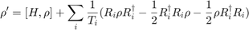
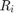
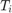

addDissipation
Implements a dissipation process via the Lindblad master equation, in a specified subsystem.
Contents
Syntax
- addDissipation(name,decay_time)
- addDissipation(name,decay_time,levels)
- addDissipation(interval,name,decay_time,levels)
Description
- addDissipation(name,decay_time) adds a dissipation effect with decay time of decay_time to the subsystem with name name.
- addDissipation(name,decay_time,levels) levels takes a vector of length 2. Adds a dissipation effect with decay time of decay_time between the levels levels(2) and levels(1) to the subsystem with name name.
- addDissipation(interval,name,decay_time) interval takes a vector of length 2. Adds a dissipation effect with decay time of decay_time to the subsystem with name name, within the timeframe specified by interval(1) and interval(2).
Detailed Description and Examples
Dissipation between different levels within one subsystem is realised by the Lindblad master equation. The Liouville von Neumann Equation is expanded by an additional Term, resulting in:

where  denotes the jumping Operator. If takes on the form of the lowering operator, the Lindblad equation models a dissipative process between the different levels of a subsystem. This loss progresses with a lifetime of . %If the dissipation levels are not specified dissipation is simulated between adjacent levels.
Example of a qbit coupled to a lightfield.
s = System; s.addEntity(Nlevel(1),'qbit'); s.addEntity(Qoscillator(3,1),'lightfield'); s.addCoupling('qbit','lightfield',0.05); s.addDissipation('qbit',40); s.addExternalField(Gausspulse(0.04,50,15,1),'qbit'); s.setTimestep(0.1); s.simulate(); %plot the gained data plot(s.time, s.getEnergy('qbit')); hold on; plot(s.time, s.getEnergy('lightfield')); plot(s.time, s.getOpValue(s.H)); s.plotEfields; xlabel('Time'); ylabel('Energy'); title('Qbit Coupled to a Lightfield'); thelegend = legend('qbit' ,'lightfield','total','laserpuls','Location','northeast'); set(thelegend,'FontSize',16);
Error using Nlevel Method 'Nlevel' is not defined for class 'Nlevel' or is removed from MATLAB's search path. Error in addDissipation_doc (line 22) s.addEntity(Nlevel(1),'qbit');